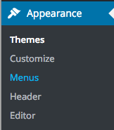

You should have already set up footer.php which is accessed from front-page.php and other pages using:
<?php get_footer(); ?>Inside the footer.php folder we need to add new menu for the footer links. To do this we ahve to register two menus inside of functions.php:
register_nav_menus( array (
"main-menu" => "Main Menu",
"footer-menu" => "Footer Menu"
)
);We can use the same function for the Main Menu in header.php with some modifications:
<nav class="small-12 large-3 columns">
<?php $footer_menu = array(
'theme_location' => 'footer-menu'
);
?>
<?php wp_nav_menu($footer_menu); ?>
</nav>To add a customizable logo, for now we can take advantage of the built in WordPress Header image by adding funcitonality to functions.php:
$args = array(
'default-image' => get_template_directory_uri() . '/images/header.jpg',
);
add_theme_support( 'custom-header', $args );This will create a new input in the Appearance menu, called Header.
A user can now set the image, which we can use as a site wide logo, using the header_image() function:
<?php header_image(); ?>We can set other attributes to modify the image, such as width and height:
$args = array(
'width' => 512,
'height' => 512
);At some point, we'll learn how to create our own customizations. For now, check out Custom Headers.